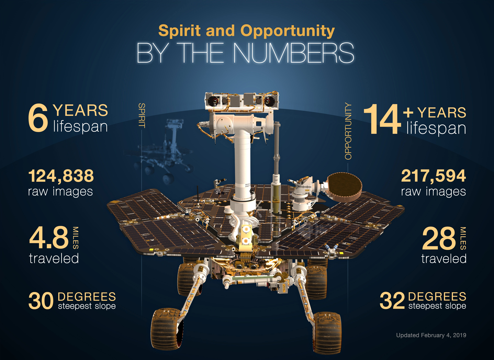
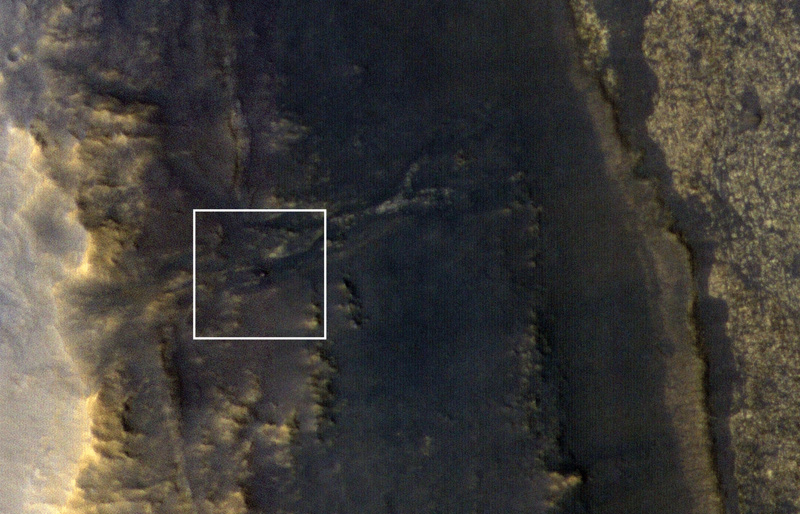

Opportunity and Spirit
In January 2004, two robotic geologists named Spirit and Opportunity landed on opposite sides of the red planet. With far greater mobility than the 1997 Mars Pathfinder rover, these robotic explorers have trekked for miles across the Martian surface, conducting field geology and making atmospheric observations. Carrying identical, sophisticated sets of science instruments, both rovers have found evidence of ancient Martian environments where intermittently wet and habitable conditions existed.
First among the mission's scientific goals was to search for and characterize a wide range of rocks and soils for clues to past water activity on Mars. The rovers were targeted to sites on opposite sides of Mars that looked like they were affected by liquid water in the past. Spirit landed at Gusev Crater, a possible former lake in a giant impact crater. Opportunity landed at Meridiani Planum, a place where mineral deposits suggested that Mars had a wet history.
Each rover bounced onto the surface inside a landing craft protected by airbags. When they stopped rolling, the airbags were deflated and the landing craft opened. The rovers rolled out to take panoramic images. These images gave scientists the information they needed to select promising geological targets to tell part of the story of water in Mars' past. Then, the rovers drove to those locations and beyond to perform close-up scientific investigations.
Since leaving their landing sites, the twin rovers have sent hundreds of thousands of spectacular, high-resolution, full-color images of Martian terrain as well as detailed microscopic images of rocks and soil surfaces to Earth. Four different spectrometers have amassed unparalleled information about the chemical and mineralogical makeup of Martian rocks and soil. Special rock abrasion tools, never before sent to another planet, have enabled scientists to peer beneath the dusty and weathered surfaces of rocks to examine their interiors.
With data from the rovers, mission scientists have reconstructed an ancient past when Mars was awash in water. Spirit and Opportunity each found evidence for past wet conditions that possibly could have supported microbial life. Opportunity's study of "Eagle" and "Endurance" craters revealed evidence for past inter-dune playa lakes that evaporated to form sulfate-rich sands. The sands were reworked by water and wind, solidified into rock, and soaked by groundwater.
While Spirit's initial travels in Gusev Crater revealed a more basaltic setting, after reaching the "Columbia Hills" the rover found a variety of rocks indicating that early Mars was characterized by impacts, explosive volcanism, and subsurface water. Unusual-looking bright patches of soil turned out to be extremely salty and affected by past water. At "Home Plate," a circular feature in the "Inner Basin" of the "Columbia Hills," Spirit discovered finely layered rocks that are as geologically compelling as those found by Opportunity.
Both rovers exceeded their planned 90-day mission lifetimes by many years. Spirit lasted 20 times longer than its original design until its final communication to Earth on March 22, 2010. Opportunity continues to operate more than a decade after launch. In 2015, Opportunity broke the record for extraterrestrial travel by rolling greater than the distance of a 26-mile (42-kilometer) marathon.